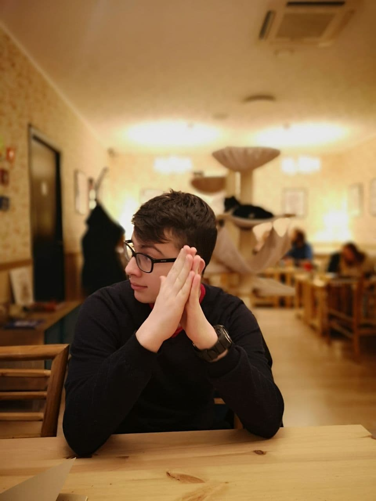
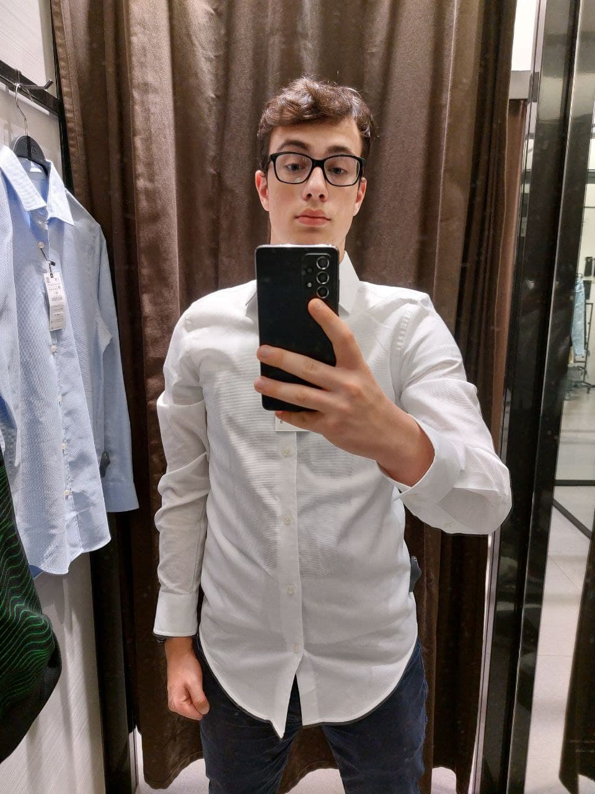

Приветствую
Я родился в Минске в 2005 на краю города. Видеокартой сильно ударило в голову. В детском саду воспитатели впервые показали мне винду. Потом школа, scratch, unity, flutter. Так я становился сильней:)
Опыт, проеткы, неудачи

Первую программу написал в 14, а в 14.30 мама сказала идти делать уроки. Когда отграждать от программирования стало безполезно, то меня записали на курсы по scratch. После scratch пошёл unity, но дебютный проект на нём вышел неудачным. В 2019 узнал про rpg maker и решил сделать игру про лучшего друга к его др. К сроку немного неуспел, но игра вышла неплохой. В 2020 со мной случился хакатон и я вместе с 6-тклассниками работал 5 месяцев над проектом цифровизации медицины и её бюрократических бед. К сожалению(или может быть к счастью), шестикласники уехали, но клоуна программиста они забыли, и поэтому мне приходится по сей день пытаться его пересоздать(плотный шалом создателям flutter).
Факты обо мне и прейскурант моих услуг
- Любимые исполнители: Би-2, U2
- Один раз я сделал usb-киллер и засунул его в умную доску
- Иногда помогаю начинающим артистам с дистрибуцией музыки. Одним из моих клиентов был сам VLAD NIGHT
- Сайт для 11-классников: 13 BYN
- Лендинг для работы: 25 BYN
- Интернет-мазагин: 40 BYN
- Адаптация под мобильные устройства: как апостол Дмитрий скажет
- Для Таких людей как Вадим Деревянко, VLAD NIGHT: Бесплатно